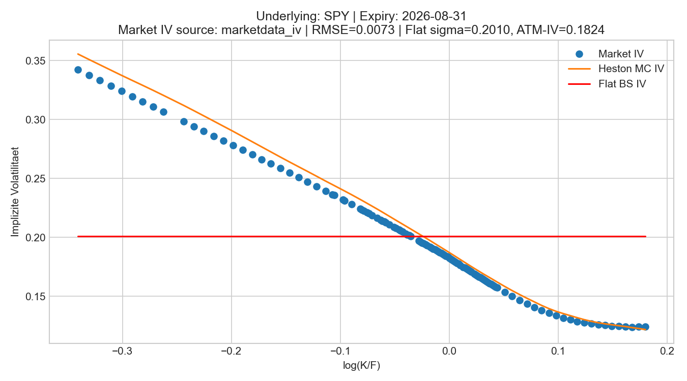
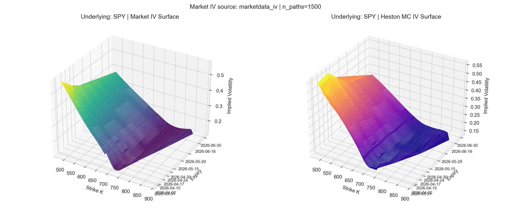
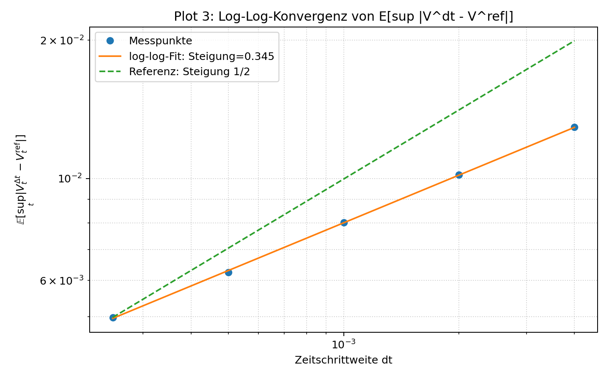
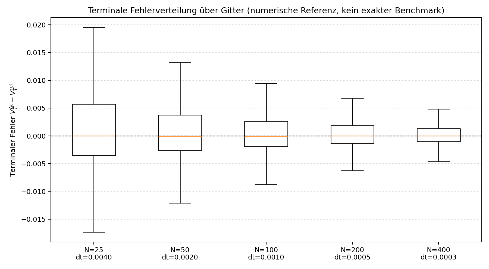
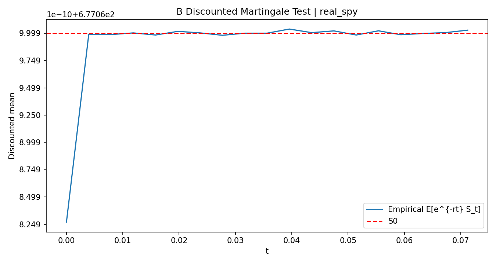

Abstract
This paper studies the Heston model as a risk-neutral stochastic volatility model with particular emphasis on the Cox–Ingersoll–Ross-type variance process. It first specifies the model framework, the log-price representation, and the role of the Feller condition. The theoretical analysis then focuses on existence, uniqueness, non-negativity, and boundary behavior of the CIR process, together with the consequences of these properties for numerical approximation. Building on this foundation, time discretization, Monte Carlo pricing, and the induced error decomposition are organized systematically. The empirical study is based on cleaned SPY option data and a calibration in the space of implied volatilities. Finally, the numerical results are interpreted in light of the theoretical structure, and the limits of the Heston model are discussed as a motivation for rough-volatility approaches.
Note on the use of AI tools.
During the preparation of this paper, AI-assisted tools were used in a supporting role. ChatGPT was used for the linguistic revision of individual formulations and for translation into English. The code used to generate the numerical plots was created with the help of Codex and was subsequently reviewed, adapted, and validated.
Introduction
The Black–Scholes model is the historical starting point of modern continuous-time arbitrage pricing theory. Its central contribution is not merely an explicit valuation formula for European options, but the structural insight that the price of a derivative can be determined from replication, self-financing, and absence of arbitrage. The object to be priced is a payoff profile \(f(S_T)\), for example the European call \[f(S_T)=(S_T-K)^+ := \max(S_T-K,0).\]
Under the physical measure \(P\), the stock price in the Black–Scholes framework is modeled by \[dS_t = \mu S_t\,dt + \sigma S_t\,dB_t\] where \(\mu\) denotes the historical drift and \(\sigma\) the constant volatility. The second tradable asset is the risk-free bond or money market account \[B_t^0=e^{rt}, \qquad dB_t^0=rB_t^0\,dt, \qquad B_0^0=1\] Under the standard assumptions of a frictionless market with continuous trading between the stock and the risk-free bond, together with full replicability, the Black–Scholes PDE follows from the arbitrage argument. Equivalently, the price can be written as a discounted expectation under a risk-neutral measure \(\mathbb Q\), under which \[dS_t = rS_t\,dt + \sigma S_t\,dW_t^{\mathbb Q}, \qquad C_0 = e^{-rT}\,\mathbb E_{\mathbb Q}[f(S_T)].\] The transition from \(\mu\) to \(r\) is the core of arbitrage-free pricing: under \(\mathbb Q\), the discounted price process is a martingale.
Example.
A simple binary model already illustrates the replication idea and valuation through risk-neutral expectations in discrete time.
Let \(S_0=100\), and suppose that at the end of the period the stock takes the value \(110\) with probability \(90\%\) and the value \(90\) with probability \(10\%\) under the historical probabilities. For a call with strike \(K=100\), the terminal payoffs are \(C_u=10\) and \(C_d=0\). Under the simplifying assumption \(r=0\), a replicating portfolio consisting of \(\Delta\) shares and a bank position \(B\) yields the linear system \[110\Delta + B = 10, \qquad 90\Delta + B = 0.\] This gives \(\Delta=\tfrac12\), \(B=-45\), and hence the arbitrage-free price \[C_0 = \Delta S_0 + B = \tfrac12 \cdot 100 - 45 = 5.\] By contrast, the expectation under the historical probabilities is \[0.9\cdot 10 + 0.1\cdot 0 = 9,\] which is incompatible with absence of arbitrage. If the option were in fact traded at price \(9\), one could short the option at the market price, construct the replicating portfolio for \(5\), and realize an immediate riskless arbitrage profit of \(4\). The risk-neutral measure corrects this drift effect exactly: from \[100 = q\cdot 110 + (1-q)\cdot 90\] one obtains \(q=\tfrac12\), and hence the same price as an expectation under the risk-neutral measure: \[C_0 = q\cdot 10 + (1-q)\cdot 0 = 5.\] The example shows in discrete form why the risk-neutral expectation representation is consistent with replication and absence of arbitrage.
In empirical applications, one observes market prices rather than model parameters. The Black–Scholes formula is therefore inverted: for a given market price one determines the volatility \(\sigma_{\mathrm{impl}}\) that exactly reproduces the formula. This quantity is called implied volatility. If the Black–Scholes model were adequate across strikes and maturities, \(\sigma_{\mathrm{impl}}\) would have to be constant. Market data violate this constancy systematically. For SPY options on the S&P 500 ETF, obtained from Market Data App, the representation in log-moneyness \[\log(K/F), \qquad F=S_0e^{rT}\] (without dividends) displays a pronounced skew/smile structure. Values \(\log(K/F)>0\) correspond to strikes above the forward price.

The figure shows that implied volatility depends systematically on moneyness and therefore cannot be described as a constant. The Heston model captures this asymmetry much better than a model with constant volatility. Economically, this is plausible: the Black–Scholes model assumes fluctuations of constant intensity, whereas empirical data display volatility clustering, stress periods, and a visible return toward a long-run level. A stochastic-volatility model with mean reversion is therefore the natural extension.
The object of this paper is thus the Heston model under the risk-neutral measure \(\mathbb Q\), described by the coupled two-dimensional SDE system \[\begin{aligned} dS_t &= rS_t\,dt + \sqrt{V_t}S_t\,dW_t^S, \\ dV_t &= \kappa(\theta - V_t)\,dt + \xi\sqrt{V_t}\,dW_t^V, \end{aligned}\] with \(\langle W^S,W^V\rangle_t = \rho t\), \(S_0>0\), \(V_0\ge 0\), \(\kappa,\theta,\xi>0\), and \(\rho\in(-1,1)\). The parameters have both economic and analytic meaning: \(\kappa\) describes the speed of mean reversion, \(\theta\) the long-run variance level, \(\xi\) the volatility of variance, and \(\rho\) the coupling between price and variance shocks.
The paper follows a closed line of argument from model specification through the theory of the variance process to empirical model criticism. Its main focal points are:
the mathematical foundation of the CIR variance dynamics, including existence, uniqueness, non-negativity, and boundary behavior,
the numerical approximations used in the Heston setting,
the convergence and error structure induced by time discretization and Monte Carlo,
the empirical results and the limits of the model.
For a given variance path, the price SDE is analytically comparatively unproblematic because its coefficients are smooth in the price variable. The central difficulty lies in the variance equation: owing to the non-globally Lipschitz diffusion coefficient \(\sqrt{V_t}\), standard SDE results are not immediately applicable. This is precisely why the CIR structure forms the theoretical core of the paper.
Risk-Neutral Model Framework
We work on a complete filtered probability space \[(\Omega,\mathcal F,(\mathcal F_t)_{0\le t\le T},\mathbb Q),\] satisfying the usual conditions and carrying a two-dimensional Brownian motion \[(W^S,W^\perp)\] The filtration is taken to be the usual augmentation of the filtration generated by \((W^S,W^\perp)\). For a given correlation parameter \(\rho\in(-1,1)\), define \[W_t^V:=\rho W_t^S+\sqrt{1-\rho^2}\,W_t^\perp.\] Then \(W^V\) is again an \((\mathcal F_t)\)-Brownian motion, and \[\langle W^S,W^V\rangle_t=\rho t.\]
Under \(\mathbb Q\), the Heston model consists of an \((\mathcal F_t)\)-adapted continuous process pair \((S,V)\) taking values in \((0,\infty)\times[0,\infty)\) and satisfying almost surely the integral equations \[\begin{aligned} S_t &= S_0 + \int_0^t rS_s\,ds + \int_0^t \sqrt{V_s}S_s\,dW_s^S, \\ V_t &= V_0 + \int_0^t \kappa(\theta-V_s)\,ds + \int_0^t \xi\sqrt{V_s}\,dW_s^V \end{aligned}\] The positivity of the price process and the non-negativity of the variance process will be made precise in the following chapters; in particular, the second equation is the analytically demanding part of the model because of the square-root diffusion.
The correlation parameter \(\rho\) couples price and variance shocks. In particular, \(\rho<0\) generates the empirically typical equity skew: negative price moves tend to be accompanied by increasing variance.
The Feller inequality \[2\kappa\theta \ge \xi^2\] classifies the boundary behavior of the CIR process: for \(V_0>0\), the process remains strictly positive if \(2\kappa\theta\ge \xi^2\), whereas hitting the boundary \(0\) becomes possible when the inequality is violated. This boundary question is precisely the core of Chapter 3.
With this, the model framework, parameter ranges, and the bridge to CIR theory are fixed. The following chapter explains why the variance process still admits a well-defined strong solution despite the singular square-root diffusion, and how its boundary behavior can be described exactly.
Mathematical Properties of the Variance Process (CIR)
This section first isolates the results on squared Bessel processes that are taken from the literature and then uses them to prove existence, uniqueness, and boundary behavior for the CIR SDE \[dV_t = \kappa(\theta - V_t)\,dt + \xi\sqrt{V_t}\,dW_t, \qquad V_0\ge 0,\ \kappa,\theta,\xi>0.\] Because the diffusion coefficient \(\sqrt{V_t}\) is not globally Lipschitz, the standard theory for globally Lipschitz coefficients cannot be applied directly. The proof therefore relies on a deterministic time-scale transformation to a squared Bessel process together with the Yamada–Watanabe principle. For an expository introduction to the CIR process and its relation to squared Bessel processes, see also (QuantGirl 2026).
Squared Bessel Processes: Definition and Quoted Standard Results
Definition 1 (Squared Bessel process). Let \((\Omega,\mathcal F,(\mathcal F_t)_{t\ge 0},\mathbb P)\) be a filtered probability space and let \(W\) be an \((\mathcal F_t)\)-Brownian motion. A non-negative \((\mathcal F_t)\)-adapted process with continuous paths is called a squared Bessel process of dimension \(\delta\ge 0\) (briefly: \(\mathrm{BESQ}(\delta)\)) if \[X_t=X_0+\delta t+2\int_0^t\sqrt{X_s}\,dW_s, \qquad X_0\ge 0,\] holds almost surely for all \(t\ge 0\).
On intervals where \(X_t>0\), Ito’s formula applied heuristically to \(R_t=\sqrt{X_t}\) gives the SDE \[dR_t=\frac{\delta-1}{2R_t}\,dt+dW_t.\] This relation serves only as intuition here; the arguments below work exclusively with the \(\mathrm{BESQ}(\delta)\) representation.
The following two theorems are quoted without proof from (Revuz and Yor 1999, XI, Theorems 1.1 and 1.2).
Theorem 2 (Revuz–Yor: existence, uniqueness, and non-negativity of \(\mathrm{BESQ}(\delta)\)). For every \(\delta\ge 0\) and every \(X_0\ge 0\), the \(\mathrm{BESQ}(\delta)\) SDE admits a unique strong solution. This solution is non-negative, has continuous paths, and is a strong Markov process.
Theorem 3 (Revuz–Yor: boundary classification of \(\mathrm{BESQ}(\delta)\)). Let \(X\sim \mathrm{BESQ}(\delta)\) with \(X_0>0\), and let \(\tau_0^X:=\inf\{t\ge 0:X_t=0\}\). Then:
If \(\delta\ge 2\), then \(\mathbb P(\tau_0^X<\infty)=0\).
If \(0<\delta<2\), then \(\mathbb P(\tau_0^X<\infty)=1\).
If \(\delta=0\), then \(0\) is reached in finite time and is absorbing.
Lemma 4 (Yamada–Watanabe). If weak existence and pathwise uniqueness hold for an SDE, then the SDE admits a unique strong solution.
In what follows, this lemma is applied only after constructing a weak CIR solution and proving pathwise uniqueness; see (Yamada and Watanabe 1971).
Existence and Uniqueness for the CIR Process
Theorem 5 (Existence and uniqueness of the CIR process). Let \(\kappa,\theta,\xi>0\) and \(V_0\ge 0\). Then the CIR SDE \[dV_t = \kappa(\theta - V_t)\,dt + \xi\sqrt{V_t}\,dW_t\] admits a unique strong solution. In particular, \(V_t\ge 0\) for all \(t\ge 0\) almost surely.
Proof. Set \[\delta:=\frac{4\kappa\theta}{\xi^2}, \qquad \varphi(t):=\frac{\xi^2}{4\kappa}\bigl(e^{\kappa t}-1\bigr), \qquad t(u):=\frac{1}{\kappa}\log\!\Bigl(1+\frac{4\kappa u}{\xi^2}\Bigr).\] Then \(\varphi:[0,\infty)\to[0,\infty)\) is a \(C^1\)-diffeomorphism with inverse \(t=\varphi^{-1}\), and \[\varphi'(t)=\frac{\xi^2}{4}e^{\kappa t}, \qquad t'(u)=\frac{4}{\xi^2}e^{-\kappa t(u)}.\]
For weak existence, choose a filtered probability space \[(\Omega,\mathcal F,(\mathcal F_t)_{t\ge 0},\mathbb P)\] carrying an \((\mathcal F_t)\)-Brownian motion \(B\) together with the associated unique strong solution \(X\) of the \(\mathrm{BESQ}(\delta)\) SDE with initial value \(X_0=V_0\). Define \[N_t:=X_{\varphi(t)}, \qquad V_t:=e^{-\kappa t}N_t, \qquad \mathcal G_t:=\mathcal F_{\varphi(t)}.\] By the deterministic time-change theorem 12, \(M_t:=B_{\varphi(t)}\) is a continuous \((\mathcal G_t)\)-martingale with quadratic variation \(\langle M\rangle_t=\varphi(t)\), and \(N\) satisfies the integral equation \[N_t = V_0+\delta\int_0^t \varphi'(s)\,ds +2\int_0^t \sqrt{N_s}\,dM_s.\] Multiplication by \(e^{-\kappa t}\) and the product rule from Lemma 13 yield \[V_t = V_0-\kappa\int_0^t V_s\,ds +\delta\int_0^t e^{-\kappa s}\varphi'(s)\,ds +2\int_0^t e^{-\kappa s/2}\sqrt{V_s}\,dM_s.\] Now define \[\widetilde W_t:=\frac{2}{\xi}\int_0^t e^{-\kappa s/2}\,dM_s.\] Then \(\widetilde W\) is a continuous \((\mathcal G_t)\)-local martingale and \[\langle \widetilde W\rangle_t =\frac{4}{\xi^2}\int_0^t e^{-\kappa s}\,d\langle M\rangle_s =\frac{4}{\xi^2}\int_0^t e^{-\kappa s}\varphi'(s)\,ds =t.\] By Lemma 14, \(\widetilde W\) is therefore a \((\mathcal G_t)\)-Brownian motion. Since \[\delta e^{-\kappa s}\varphi'(s)=\frac{\delta\xi^2}{4}=\kappa\theta,\] it follows that \[V_t = V_0+\int_0^t \kappa(\theta-V_s)\,ds +\xi\int_0^t \sqrt{V_s}\,d\widetilde W_s.\] This constructs a weak solution of the CIR SDE.
For pathwise uniqueness, consider now an arbitrary filtered probability space \((\Omega,\mathcal F,(\mathcal H_t)_{t\ge 0},\mathbb P)\) carrying an \((\mathcal H_t)\)-Brownian motion \(W\), and two \((\mathcal H_t)\)-adapted continuous solutions \(V^1,V^2\) of the CIR SDE with the same initial value \(V_0\). For \(i=1,2\), set \[Y_t^i:=e^{\kappa t}V_t^i, \qquad X_u^i:=Y_{t(u)}^i, \qquad \widehat{\mathcal H}_u:=\mathcal H_{t(u)}.\] Lemma 13 implies \[Y_t^i = V_0+\kappa\theta\int_0^t e^{\kappa s}\,ds +\xi\int_0^t e^{\kappa s/2}\sqrt{Y_s^i}\,dW_s.\] A second application of the deterministic time-change theorem shows that there exists an \((\widehat{\mathcal H}_u)\)-Brownian motion \(\widehat W\) such that \[X_u^i = V_0+\kappa\theta\int_0^u e^{\kappa t(s)}t'(s)\,ds +\xi\int_0^u e^{\kappa t(s)/2}\sqrt{X_s^i}\,dW_{t(s)}\] and hence \[X_u^i = V_0+\frac{4\kappa\theta}{\xi^2}u+2\int_0^u \sqrt{X_s^i}\,d\widehat W_s = V_0+\delta u+2\int_0^u \sqrt{X_s^i}\,d\widehat W_s.\] Thus \(X^1\) and \(X^2\) solve on the same space, with respect to the same filtration and the same Brownian motion, the same \(\mathrm{BESQ}(\delta)\) SDE with identical initial value. By pathwise uniqueness for the squared Bessel process, it follows that \(X^1=X^2\) almost surely, and therefore \(V^1=V^2\) almost surely.
The CIR SDE therefore has a weak solution and satisfies pathwise uniqueness. The Yamada–Watanabe lemma now implies the existence of a unique strong solution. Finally, from the representation \(V_t=e^{-\kappa t}X_{\varphi(t)}\) and the non-negativity of \(X\), it follows that \(V_t\ge 0\) for all \(t\ge 0\) almost surely. ◻
Feller Condition for the CIR Process
Theorem 6 (Feller condition for CIR). Let \(V\) be the CIR process with \(V_0>0\), and define \(\tau_0^V:=\inf\{t\ge 0:V_t=0\}\). Then:
If \(2\kappa\theta\ge \xi^2\), then \(\mathbb P(\tau_0^V<\infty)=0\).
If \(2\kappa\theta<\xi^2\), then \(\mathbb P(\tau_0^V<\infty)=1\).
In both cases, \(V\) remains non-negative.
Proof. With \(\delta=4\kappa\theta/\xi^2\) and the representation constructed in the previous proof, \[V_t=e^{-\kappa t}X_{\varphi(t)}, \qquad X\sim\mathrm{BESQ}(\delta),\] we have for each \(t\ge 0\), since \(e^{-\kappa t}>0\), \[V_t=0 \iff X_{\varphi(t)}=0.\] Set \(\tau_0^X:=\inf\{u\ge 0:X_u=0\}\). Because \(\varphi\) is a strictly monotone bijection from \([0,\infty)\) onto \([0,\infty)\), it follows that \[\tau_0^V = \inf\{t\ge 0:X_{\varphi(t)}=0\} = \varphi^{-1}(\tau_0^X),\] where \(\varphi^{-1}(\infty):=\infty\). In particular, \[\tau_0^V<\infty \iff \tau_0^X<\infty.\] The quoted boundary classification of the squared Bessel process gives \[\mathbb P(\tau_0^X<\infty)= \begin{cases} 0, & \delta\ge 2,\\ 1, & 0<\delta<2. \end{cases}\] Since \(\delta=4\kappa\theta/\xi^2\), the condition \(\delta\ge 2\) is equivalent to \(2\kappa\theta\ge \xi^2\), while \(0<\delta<2\) is equivalent to \(2\kappa\theta<\xi^2\). This proves both assertions for \(\tau_0^V\). Non-negativity was already established in the existence theorem. ◻
Remark 7 (Interpretation of the Feller condition). Since \(V\) is continuous and non-negative, \(\tau_0^V=\infty\) is equivalent to \(\inf_{t>0}V_t>0\). The Feller condition thus separates the case of strict positivity from the case of almost sure boundary hitting. This distinction is important for numerical approximation because frequent visits near \(0\) dominate the treatment of the term \(\sqrt{V_t}\).
Convergence of Monte Carlo Option Prices under FTE and Log-Euler
Aim and Overview
After the existence and uniqueness analysis of the CIR process, the study of numerical approximation can now proceed on a sound mathematical basis. This chapter therefore examines the numerical methods used to compute European option prices in the Heston model and thereby prepares the numerical foundation for the later parameter calibration. The central difficulty lies in the variance equation: because of the square-root term \(\sqrt{V_t}\), the diffusion coefficient is not globally Lipschitz, so standard results for explicit SDE schemes such as Euler–Maruyama do not apply directly. For this reason, the variance is approximated by the full-truncation Euler method, which truncates negative intermediate values and thus yields a numerically stable and well-defined approximation. The convergence theorems used in this section are taken from work by Cozma, Reisinger, and others. Because of their scope, they are not reproduced in full here, but are cited in a form sufficient for the present price and error analysis.
Full-Truncation Euler for the Variance Process
For the interpretation of the literature results, the Feller coefficient \[\nu:=\frac{2\kappa\theta}{\xi^2}\] is central, because it determines both the boundary behavior of the CIR process and the parameter ranges in which the numerical convergence statements are valid. A naive explicit Euler scheme is problematic in the CIR setting because negative intermediate values may occur, in which case the square-root term would become numerically undefined. The full-truncation Euler scheme therefore replaces negative values by \(0\) before drift and diffusion are evaluated; this truncation is what makes the method robust in the Heston setting.
Let \(N\in\mathbb N\), \(\Delta:=T/N\), and \(t_n:=n\Delta\). With a view toward the later joint simulation of the price and variance processes, we generate independent standard normal variables \(Z_n^{(1)},Z_n^{(2)}\) and set \[ \Delta W_n^S:=\sqrt{\Delta}\,Z_n^{(1)},\qquad \Delta W_n^V:=\sqrt{\Delta}\,\bigl(\rho Z_n^{(1)}+\sqrt{1-\rho^2}\,Z_n^{(2)}\bigr). \label{eq:brownianincrements}\]
Full-Truncation-Euler (FTE).
We define an auxiliary sequence \((\tilde V_n)_{n=0,\dots,N}\) and the positively truncated sequence \(\bar V_n:=(\tilde V_n)^+\) by \[ \tilde V_{n+1} = \tilde V_n + \kappa\bigl(\theta-(\tilde V_n)^+\bigr)\Delta + \xi\sqrt{(\tilde V_n)^+}\,\Delta W_n^V,\qquad \bar V_n=(\tilde V_n)^+, \label{eq:FTE}\] with \(\tilde V_0=v_0\).
For the statement of the following literature result, write \(\bar V_t^{(N)}:=\bar V_n\) for \(t\in[t_n,t_{n+1})\). A central building block is then the strong convergence of the FTE approximation for the CIR process together with its rate. In the case where the boundary point \(0\) is inaccessible, the following holds:
Theorem 8 (Strong FTE rate for CIR, quoted). Assume that \(\nu>3\) and \(2\le p<\nu-1\). Then there exists a constant \(C=C(p,T,\kappa,\theta,\xi,v_0)\) such that \[\sup_{t\in[0,T]}\|V_t-\bar V_t^{(N)}\|_{L^p}\le C\,N^{-1/2},\] where \(\bar V^{(N)}\) denotes the piecewise constant FTE approximation defined in [eq:FTE].
Proof. See (Cozma and Reisinger 2017, Theorem 1.1). ◻
Strong Convergence of the Price Process under LE+FTE
The previous result initially controls only the variance process. It does not immediately follow that the exact price solution driven by the approximated variance converges to the exact price solution driven by the exact variance. In addition, one has to show that the numerical price approximation based on the numerical variance approximation converges to the correct price process as well. At this point, the log-price representation is particularly useful both analytically and numerically.
Remark 9 (Log-price representation and heuristic error propagation). Since the price process remains strictly positive for positive initial data, \(\log\) is well defined on the state space of \(S_t\) and belongs to \(C^2\) on \((0,\infty)\). Ito’s formula can therefore be applied to \(X_t:=\log S_t\), which yields \[dX_t=\Bigl(r-\tfrac12 V_t\Bigr)\,dt+\sqrt{V_t}\,dW_t^S.\] Numerically, this representation is advantageous because the multiplicative structure of the price process turns into additive updates, and the approximated price can then be reconstructed simply by exponentiation, \[S_t=e^{X_t},\] Analytically, the log representation is also useful because it makes the influence of the variance process directly visible.
If one argues heuristically from a variance approximation with rate \(1/2\), \[\sup_{t\in[0,T]}\|V_t-\bar V_t^{(N)}\|_{L^2}=O(N^{-1/2}),\] and considers the difference equation \[X_t-\widehat X_t^{(N)} = -\frac12\int_0^t \bigl(V_s-\bar V_s^{(N)}\bigr)\,ds + \int_0^t \bigl(\sqrt{V_s}-\sqrt{\bar V_s^{(N)}}\bigr)\,dW_s^S\] then Cauchy–Schwarz gives a contribution of order \(O(N^{-1/2})\) in \(L^2\) for the drift term, while Ito’s isometry together with \[|\sqrt a-\sqrt b|^2\le |a-b|,\qquad a,b\ge 0,\] initially yields only a contribution of order \(O(N^{-1/2})\) for the quadratic error of the stochastic term. Hence one obtains heuristically \[\sup_{t\in[0,T]}\mathbb E\bigl[|X_t-\widehat X_t^{(N)}|^2\bigr]=O(N^{-1/2}), \qquad \sup_{t\in[0,T]}\|X_t-\widehat X_t^{(N)}\|_{L^2}=O(N^{-1/4}).\] In particular, this already implies \(L^1\)-convergence of the log prices, since on a finite time horizon \(L^2\)-convergence always implies \(L^1\)-convergence. This derivation is, however, purely illustrative and not efficient: the literature proves substantially stronger results, and the argument is included mainly to make intuitive why the log representation simplifies the analytical treatment. Moreover, the argument concerns only the log prices at first; additional integrability assumptions are required to transfer the conclusion to the prices themselves.
For the actual price discretization, we now use the log representation. With the correlated Brownian increments introduced above in [eq:brownianincrements] and the FTE approximation \(\bar V_n\), the log-Euler scheme is \[ \widehat X_{n+1} = \widehat X_n + \Bigl(r-\tfrac12 \bar V_n\Bigr)\Delta + \sqrt{\bar V_n}\,\Delta W_n^S, \qquad \widehat X_0=\log S_0, \label{eq:LElog}\] and the associated price approximation is \[ \widehat S_n:=\exp(\widehat X_n)\quad (n=0,\dots,N). \label{eq:Sexp}\] For the quoted convergence theorem, let \(\widehat S^{(N)}\) denote the corresponding continuous-time LE+FTE interpolation. Here \(p^\ast(\nu)\) and \(T^\ast(p)\) are critical bounds, depending on the model parameters, for the admissible exponent and the maximal maturity considered. A result that covers exactly the combination [eq:FTE]–[eq:Sexp] is:
Theorem 10 (Strong rate for the price process under LE+FTE, quoted). Assume that the conditions of Cozma and Reisinger are satisfied. Then for all \(1\le p<p^\ast(\nu)\) and \(T<T^\ast(p)\), \[\sup_{t\in[0,T]}\|S_t-\widehat S_t^{(N)}\|_{L^p} \le C\,\sqrt{\frac{\log(2N)}{N}},\] where \(\widehat S^{(N)}\) is the continuous-time LE+FTE approximation and \(C\) depends on \((p,T,S_0,v_0,\kappa,\theta,\xi,\rho)\).
Proof. See (Cozma and Reisinger 2018, Theorem 2.7). ◻
Convergence of the Call Price: Lipschitz Argument and Error Decomposition
For a European call with strike \(K>0\) and maturity \(T>0\), write \[g(s):=(s-K)^+,\qquad C_0:=e^{-rT}\,\mathbb E[g(S_T)],\qquad C_0^{(N)}:=e^{-rT}\,\mathbb E[g(\widehat S_T^{(N)})].\] Then \(g\) is \(1\)-Lipschitz on \(\mathbb R\): \[|g(s)-g(\tilde s)|\le |s-\tilde s|.\] Hence the time-discretization error satisfies \[|C_0 - C_0^{(N)}| = e^{-rT}\Big|\mathbb E[g(S_T)]-\mathbb E[g(\widehat S_T^{(N)})]\Big| \le e^{-rT}\,\mathbb E\bigl[|S_T-\widehat S_T^{(N)}|\bigr]. \label{eq:callbiasLipschitz}\] Applying the quoted result for the price process with \(p=1\) immediately gives \[|C_0 - C_0^{(N)}|\le e^{-rT}C\,\sqrt{\frac{\log(2N)}{N}}.\]
Monte Carlo estimator.
For \(M\in\mathbb N\) independent paths, define \[\widehat C_0^{(M,N)}:=\frac1M\sum_{m=1}^M e^{-rT}\,g\!\bigl(\widehat S_T^{(N,m)}\bigr).\] If we set \[Y_m^{(N)}:=e^{-rT}\,g\!\bigl(\widehat S_T^{(N,m)}\bigr),\] then the \(Y_m^{(N)}\) are independent and identically distributed with \(\mathbb E[Y_m^{(N)}]=C_0^{(N)}\). Under the assumption \(\mathrm{Var}(g(\widehat S_T^{(N)}))<\infty\), it follows that \[\mathbb E\bigl|\widehat C_0^{(M,N)}-C_0^{(N)}\bigr| \le \sqrt{\mathbb E\bigl|\widehat C_0^{(M,N)}-C_0^{(N)}\bigr|^2}\] and, by independence, \[\mathbb E\bigl|\widehat C_0^{(M,N)}-C_0^{(N)}\bigr|^2 = \mathrm{Var}\!\Bigl(\frac1M\sum_{m=1}^M Y_m^{(N)}\Bigr) = \frac{1}{M^2}\sum_{m=1}^M \mathrm{Var}(Y_m^{(N)}) = \frac{\mathrm{Var}(Y_1^{(N)})}{M}.\] Therefore, \[\mathbb E\bigl|\widehat C_0^{(M,N)}-C_0^{(N)}\bigr| \le \frac{e^{-rT}\sqrt{\mathrm{Var}(g(\widehat S_T^{(N)}))}}{\sqrt{M}}.\]
Main Theorem
Theorem 11 (Main theorem: total error under LE+FTE+MC). Under the assumptions of the quoted convergence result for the price process with \(p=1\) and the moment condition \[\mathrm{Var}(g(\widehat S_T^{(N)}))<\infty,\] there exist constants \(C_{\mathrm{disc}},C_{\mathrm{MC}}\ge0\) such that \[\mathbb E\bigl|C_0-\widehat C_0^{(M,N)}\bigr| \le C_{\mathrm{disc}}\sqrt{\frac{\log(2N)}{N}} + C_{\mathrm{MC}}\,M^{-1/2}.\]
Proof. The triangle inequality yields \[\bigl|C_0-\widehat C_0^{(M,N)}\bigr| \le \bigl|C_0-C_0^{(N)}\bigr| + \bigl|C_0^{(N)}-\widehat C_0^{(M,N)}\bigr|.\] For the discretization term, [eq:callbiasLipschitz] together with the strong rate for the price process at \(p=1\) implies \[\bigl|C_0-C_0^{(N)}\bigr| \le e^{-rT}\,\mathbb E\bigl[|S_T-\widehat S_T^{(N)}|\bigr] \le C_{\mathrm{disc}}\sqrt{\frac{\log(2N)}{N}}.\] For the Monte Carlo term, \(\widehat C_0^{(M,N)}\) is a sample mean of independent square-integrable random variables. Therefore, \[\mathbb E\bigl|C_0^{(N)}-\widehat C_0^{(M,N)}\bigr| \le \frac{e^{-rT}\sqrt{\mathrm{Var}(g(\widehat S_T^{(N)}))}}{\sqrt{M}} \le C_{\mathrm{MC}}\,M^{-1/2}.\] Combining the two bounds proves the claim. ◻
Calibration Functional
Calibration is carried out in the space of implied volatilities across strikes and maturities. Let \[\mathcal E=\{T_1,\dots,T_J\}, \qquad \mathcal I_j=\{1,\dots,n_j\}, \qquad \mathcal O:=\{(j,i):1\le j\le J,\ 1\le i\le n_j\}\] denote the expiries used, the associated strikes, and the full calibration set. The admissible parameter space is \[\mathcal P:=(0,\infty)^3\times(-1,1)\times[0,\infty).\] The goal is to find a parameter vector \(\Theta=(\kappa,\theta,\xi,\rho,v_0)\in\mathcal P\) minimizing the weighted error functional \[\mathcal J(\Theta) := \sum_{(j,i)\in\mathcal O} w_{ij}\bigl(\sigma^{\text{model}}_{ij}(\Theta)-\sigma^{\text{mkt}}_{ij}\bigr)^2\].
The weights \(w_{ij}\) are based primarily on the bid-ask spread. Options with a tight spread receive a larger weight because their market prices are typically more reliable; options with a large spread are weighted less strongly. In the code implementation used here, this spread weighting is additionally balanced slightly across moneyness so that the very narrow region around at-the-money does not dominate the objective functional entirely. The essential point for interpretation, however, is that the weighting is intended to reflect both liquidity and price plausibility.
Working in the IV space normalizes pricing errors across different
strikes and maturities and makes the shape of the smile directly
comparable. Optimization is performed with L-BFGS-B, that
is, a gradient-based quasi-Newton method with box constraints (Byrd et al. 1995).
In the implementation, it is combined with multiple restarts and common
random numbers so that comparisons of objective values are not dominated
by changing Monte Carlo noise.
Data Basis and Calibration Procedure
The numerics developed in Chapter 4 are implemented in Python code that separates data preparation, calibration, and diagnostic evaluation in a modular way. In what follows, only those procedural steps are documented that are necessary for reproducing the reported results.
Data Cleaning
The raw data come from MarketData.app for SPY options. In the snapshot considered here, \(4716\) raw quotes are loaded initially; after cleaning, \(3469\) observations remain. The purpose of the cleaning procedure is not maximal data density, but rather a consistent option universe for calibration. The observations removed are mainly quotes without reliable bid/ask information, contracts with economically implausible prices, duplicates, violations of basic no-arbitrage bounds, and clearly illiquid observations. In the cleaning report, \(961\) exclusions are due to illiquidity, \(246\) to overly wide spreads, and \(40\) to arbitrage violations.
For the subsequent Heston calibration, the OTM side is preferred for each strike in order to avoid an artificial jump at the transition between calls and puts. In addition, the set of options considered is restricted to \(|\log(K/F)|\le 0.35\), so that the analysis remains focused on the region in which both data quality and model relevance are sufficiently high.

The volatility surface serves here purely to diagnose the data geometry. The calibration itself uses only an extracted subset of the full data set.
Implementation Workflow
The calibration is carried out on three selected expiries: \[2026\text{-}04\text{-}17,\qquad 2026\text{-}06\text{-}18,\qquad 2026\text{-}09\text{-}18,\] The corresponding risk-free rate is determined using bonds with similar maturities; in the reported run, \(r=3.59\%\) is used.
Each objective-function evaluation follows the same scheme: given a candidate \(\Theta\), one first simulates variance paths \(\widehat V\) and then the corresponding price paths \(\widehat S\). Next, Monte Carlo prices for the selected options are computed, inverted into Black–Scholes implied volatilities, and only then compared with the observed market IVs. The optimization is therefore carried out not in price space, but in the IV representation, which is more natural from the perspective of market standardization.
For the actual calibration, \(1200\) paths per objective evaluation, \(140\) time steps per year, and seed \(1234\) are used. After filtering and subsampling, \(80\), \(73\), and \(80\) options enter the three expiries. The best candidate found is then re-evaluated on the full selection set using \(5000\) paths.
The optimization uses L-BFGS-B, so the quoted parameter
vector should be read as the best point found rather than as a provably
fully optimized local minimum. The full calibration takes approximately
\(710\) seconds on my laptop. To
compare competing parameter candidates, the same Gaussian random fields
are reused expiry by expiry; this common-random-numbers construction
reduces Monte Carlo noise in objective differences noticeably.
Empirical Results
In what follows, IV-\(\mathrm{RMSE}\) denotes the root mean squared error measured in implied-volatility space and therefore quantifies the average discrepancy between model IV and market IV.
This chapter documents the numerical findings of the calibration and validation run described above. The results should be read as empirical evidence; they do not replace a parameter-specific convergence theory for the actual calibrated parameter vector.
lS Parameter & Value
\(\kappa\) & 16.257477
\(\theta\) & 0.003705
\(\xi\) & 4.676007
\(\rho\) & -0.798064
\(v_0\) & 0.042568
The table contains the best parameter vector found among the two L-BFGS-B restarts carried out, so the vector should be interpreted as the best point found, not as a provably optimized local minimum.
The Feller coefficient \[\nu=\frac{2\kappa\theta}{\xi^2}\approx 0.00551\] lies far below \(3\). The result of Cozma and Reisinger cited in Chapter 4 therefore does not cover this parameter vector. All subsequent convergence and stability statements are thus explicitly numerical diagnostics rather than convergence proofs for this specific parameter choice.
To assess the numerical plausibility of the calibrated parameter vector nonetheless, a separate test against a very finely discretized reference solution was carried out. Here the error of the implemented scheme is not measured against the unknown exact solution, but against a highly resolved reference simulation. Such a diagnostic cannot prove convergence in the strict sense; it can only indicate whether the relevant computational range exhibits a stable error profile that decreases under refinement. It is noteworthy that (Cozma and Reisinger 2017) also report stable behavior in numerical experiments for parameter constellations below the theoretical threshold \(\nu>3\).


The two figures show an error level that decreases under grid refinement both for the pathwise supremum error and for the terminal-time error. This is consistent with numerical stability and makes the use of the scheme plausible for the parameter vector considered here. It does not, however, yield a theoretical convergence proof.
Convergence Diagnostics
The diagnostics are based on a separate validation run with seed \(20260309\), path-count grid \((500,1000,2000,5000,10000,20000)\), and step-count grid \((10,20,50,100,200,500)\). For the Monte Carlo curve, a log-log regression of the standard errors against the number of paths yields a slope of \(-0.509845\), which is consistent with the theoretical rate \(M^{-1/2}\). For the time-step study, the maximal relative deviation from the finest grid with \(500\) steps is \(0.03498\); at \(200\) steps it decreases to \(0.005885\). In addition, comparison with a high-precision reference Monte Carlo valuation gives a call-price \(\mathrm{RMSE}\) of \(0.131057\) and an IV-\(\mathrm{RMSE}\) of \(0.006908\).
These figures do not establish parameter-specific strong convergence of the implemented scheme. They merely show that, in the computational range considered, there are no obvious instabilities and no behavior fundamentally at odds with the expected error logic.
Martingale Property of the Discounted Price Process

Under the risk-neutral measure, the discounted price process \(e^{-rt}S_t\) must be a martingale. Numerically, this property cannot be verified pointwise, but it can be made plausible in expectation by comparing the simulated mean \(E[e^{-rt}S_t]\) over time with the initial value \(S_0\). This is exactly what the martingale check does.
The martingale check is a consistency test, not a proof of correctness. In the validation report, the maximal relative deviation of the discounted mean is \(2.56\cdot 10^{-13}\). Thus, in the present run, there is no numerically relevant contradiction to the martingale property of the discounted price process. This observation supports the internal consistency of discounting, correlation generation, and price updating, but it does not replace a formal verification of the implementation.
In-Sample and Out-of-Sample Fit

On the calibration set, the smile is reproduced visually quite closely in the central moneyness region; the largest deviations are concentrated in the wings. The expiry not used for calibration shows a similar pattern: agreement remains reasonable in the center, while the boundary regions are clearly more difficult. Since no separate quantitative out-of-sample error statistic is reported for this comparison, the interpretation is deliberately cautious and primarily diagnostic.
Residual Structure
The residual diagnostics over \(805\) market points yield an IV-\(\mathrm{RMSE}\) of \(0.032212\) and a price-\(\mathrm{RMSE}\) of \(0.636885\). The heatmap also shows that the errors do not scatter diffusely around zero, but form structured patterns across maturity and moneyness. This is consistent with a model-specification gap, but does not identify its cause uniquely. Besides the model structure, data filtering, weighting choices, and residual Monte Carlo noise may also contribute to the observed pattern. Interpreting the residuals as a model limitation is therefore plausible, but not unavoidable.
Model
Limitations and Outlook toward
Rough Volatility
The residuals observed in Chapter 6 suggest a model-based interpretation: a one-factor Markov model can reproduce the simultaneous variation across moneyness and maturity only to a limited extent. This reading is natural, but it does not follow inevitably from the data alone. The following section is therefore formulated explicitly as a brief outlook.
Typical restrictions are:
a Markov structure with only one volatility factor,
limited flexibility, especially for short maturities,
systematic residual patterns when fitting several expiries simultaneously.
Rough-volatility models address these deficits by describing the variance no longer through a purely Markovian dynamics, but through a Volterra kernel with memory: \[V_t = V_0 + \int_0^t K(t-s)\kappa(\theta-V_s)\,ds + \int_0^t K(t-s)\xi\sqrt{V_s}\,dW_s,\] mit \[K(t)=\frac{t^{H-1/2}}{\Gamma(H+1/2)},\qquad H\in(0,1/2).\] The case \(H<1/2\) corresponds to the empirically observed roughness of volatility, that is, a highly irregular short-term dynamics (Gatheral et al. 2018; El Euch and Rosenbaum 2019). Compared with the classical Heston framework, the memory structure opens up additional degrees of freedom for a simultaneous fit across moneyness and maturity. In this sense, rough-volatility models form a natural extension class if the residual patterns visible in the present data set cannot already be explained by numerical or data-related effects.
The aim here is not to work out rough Heston technically, but to place the observed residual patterns into a coherent model-theoretic context.
Conclusion
The paper first clarifies the mathematical status of the CIR variance process through existence, uniqueness, non-negativity, and boundary classification. Building on this, the log-Euler scheme for the price and the full-truncation Euler scheme for the variance are placed into context, and the total error is decomposed into a discretization part and a Monte Carlo part.
The empirical study shows that the Heston framework can reproduce the central smile structure of the SPY data set considered here. At the same time, the calibrated parameter vector lies outside the parameter range covered by the cited FTE theorem, so that the numerical diagnostics are intentionally to be read only as evidence and not as proof. The remaining structured residuals point toward additional model flexibility without identifying their cause conclusively. In this sense, the Heston model serves here as a mathematically controlled reference model rather than as a final description of the data.
Auxiliary Results for Chapter 3
Theorem 12 (Deterministic time-change rule). Let \(W\) be a Brownian motion, and let \(\tau:[0,\infty)\to[0,\infty)\) be deterministic, \(C^1\), strictly increasing, with \(\tau(0)=0\). Then there exists a Brownian motion \(\widehat W\) such that for suitable integrands \(H\), \[\int_0^t H_s\,dW_{\tau(s)} =\int_0^t H_s\sqrt{\tau'(s)}\,d\widehat W_s.\] Equivalently, in differential notation, \[dW_{\tau(s)}=\sqrt{\tau'(s)}\,d\widehat W_s.\]
A proof can be found in (Revuz and Yor 1999, V); see also (Karatzas and Shreve 1991, chap. 3).
Lemma 13 (Product rule for a deterministic factor). Let \(X\) be a continuous semimartingale and let \(f\in C^1([0,\infty))\) be deterministic. Then \[d(f(t)X_t)=f(t)\,dX_t+f'(t)X_t\,dt.\]
This is a standard corollary of Ito’s formula; see (Karatzas and Shreve 1991, chap. 3).
Lemma 14 (Normalization of a continuous martingale). Let \((M_t)_{t\ge 0}\) be a continuous local martingale with \(\langle M\rangle_t = c t\) for some \(c>0\). Then \(\widetilde W_t:=M_t/\sqrt{c}\) is a Brownian motion.
This follows from Levy’s characterization; see (Revuz and Yor 1999, V).
Definition 15 (Pathwise uniqueness). An SDE is said to satisfy pathwise uniqueness if, on every probability space with the same Brownian motion \(W\) and the same initial value, any two solutions \(X^1,X^2\) are almost surely indistinguishable, that is, \[\mathbb P\big(X_t^1=X_t^2\ \text{for all }t\ge 0\big)=1.\]
See (Yamada and Watanabe 1971).